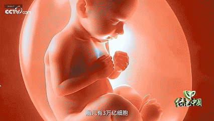
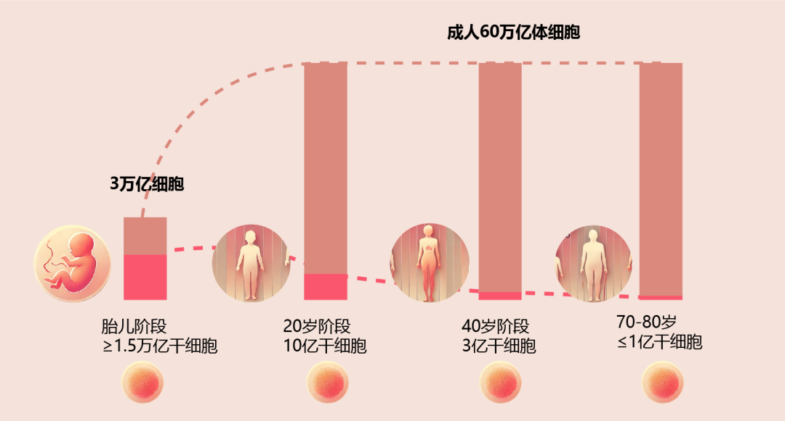
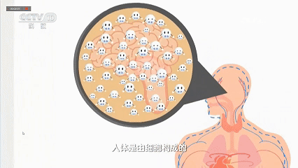
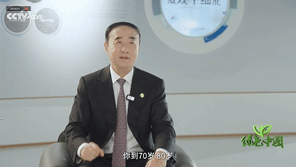
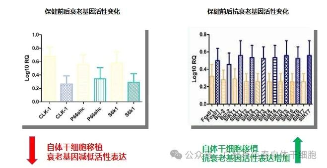
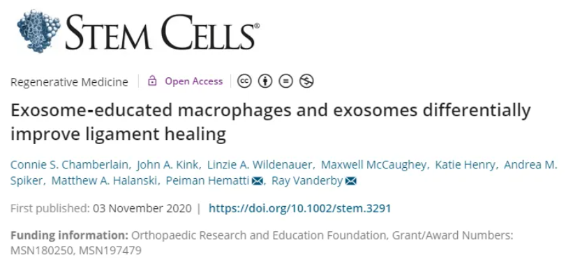
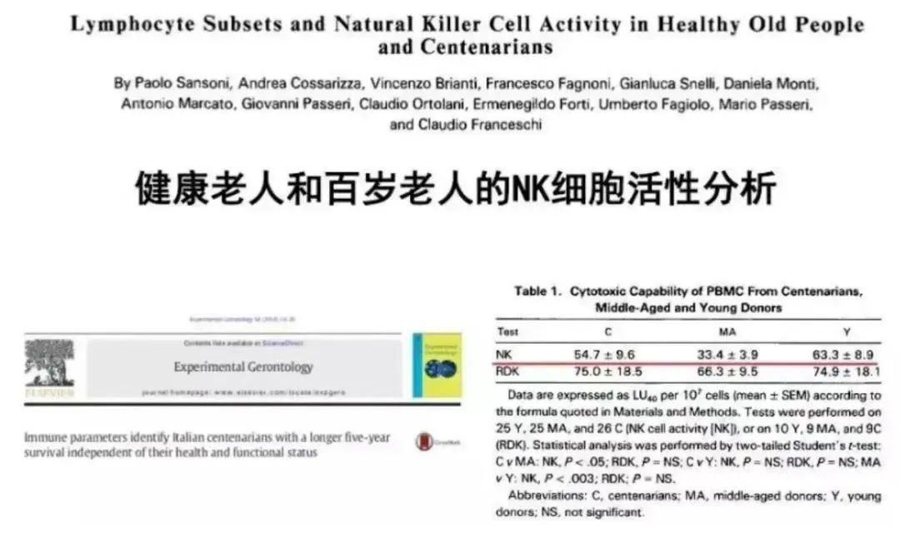
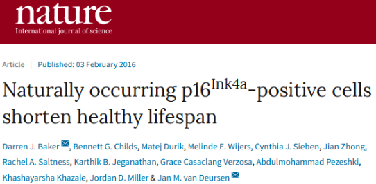

别等身体亮红灯！百年春自体干细胞，为您定制细胞级抗衰防线
2026-03-04

About Us
关于百年春
随着《Nature Aging》最新研究揭示40岁与60岁是衰老的两次"断崖期"，科学家将目光聚焦于人体自有的修复军团——自体干细胞。
央视近期的一项报道更是揭示了一个令人震惊的事实——人体干细胞数量在40岁时急剧减少到约3亿，远低于20岁时的10亿。这支关键的“修复团队”大幅缩减，不仅加速了衰老过程，还是导致多种器官功能下降和疾病发生的重要因素。

今年9月发表在国际顶级期刊《Nature Aging》上的研究也指出，40岁和60岁是人体经历的两次“断崖式”衰老期，而干细胞的衰减可能正是这一过程的核心密码。
干细胞：人体自我修复的中坚力量
干细胞，被誉为“生命种子”，是人体内唯一具有再生能力的细胞。它们能够分化为各种功能细胞，修复损伤组织，维持器官的正常运作。
刚出生时，人体约有3万亿细胞，其中约10亿是干细胞，为快速生长与发育提供支持。然而，随着年龄增长，干细胞的数量会显著减少：

20岁：人体的形态发育基本完成，细胞总数达到最高水平，约在40万亿到60万亿之间。此时，干细胞数量也处于较高水平，大约有10亿个，修复能力极为强大。
40岁：干细胞数量开始急剧下降，仅剩约3亿个。随着这一变化，人体的自我修复功能也显著减弱。
70岁：干细胞数量进一步减少至不足1亿个，修复能力几乎耗尽。与此同时，与衰老相关的疾病开始逐渐显现。

干细胞数量的减少，是人体自我修复能力不断下降的直接原因，也深刻揭示了衰老现象背后的核心生物学机制。
干细胞的流失，让衰老成为必然
人体的衰老过程伴随着干细胞数量与功能的同步衰退，这背后涉及复杂的生物学机制：
1
修复机能减弱：干细胞数量锐减
2
质量下降：干细胞也会“变老”
3
免疫失衡与慢性炎症

干细胞的衰老能逆转吗？科学家正在探索答案
01
外源性干细胞补充

02
外泌体疗法：再生医学的新星

03
自体免疫细胞（NK）抗衰：清除“僵尸”，守护青春


04
优化生活方式：守护干细胞延缓衰老
干细胞研究，为我们揭开生命奥秘的新篇章
关注我们